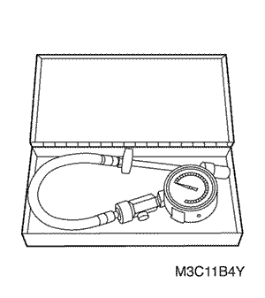
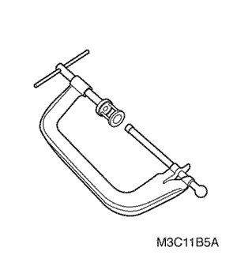
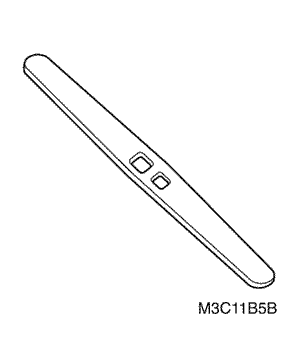
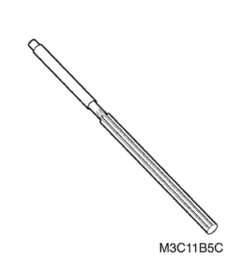
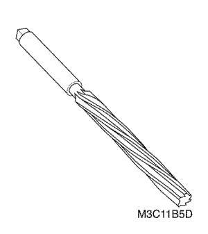
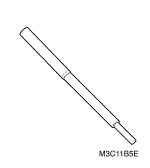
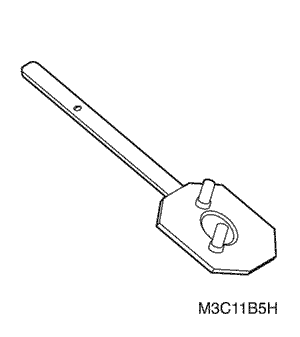
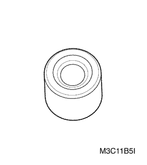
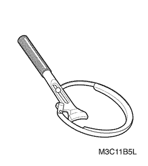

Matiz/Spark | ||||||||
| ||||||||
Aplicación | Descripción (1.0L SOHC) |
Datos Generales: | . |
Diámetro interior del cilindro: | . |
Pistón: | . |
Segmentos del pistón: | . |
. | |
Bulón del pistón: | . |
Árbol de levas | . |
. | |
. | |
. | |
Cigüeñal: | . |
Sistema de válvulas | |
Bomba de aceite | . |
Aplicación | N•m | Lb-pie | Lb-pulg. |
Tornillos / tuercas de la carcasa del distribuidor | 9 - 12 | - | 80 - 106 |
Tornillos/tuercas del colector de escape | 17 - 27 | 13 - 20 | - |
Tornillos del escudo térmico del colector de escape | 8 - 12 | - | 71 - 106 |
Tuercas de bloqueo de ajuste de la válvula | 10 - 14 | - | 89 - 124 |
Tornillos del eje del balancín | 9 - 12 | - | 80 - 106 |
Bujía | 20 - 30 | 15 - 22 | - |
Tornillos hexagonales de la tapa de la culata | 9 - 12 | - | 80 - 106 |
Tornillos de la culata | 65 - 70 | 48 - 52 | - |
Tornillo del tubo de respiración del filtro de aire | 7 - 9 | - | 62 - 80 |
Tuercas de la carcasa del filtro de aire | 7 - 9 | - | 62 - 80 |
Tornillos del bloque amortiguador de la fijación del motor | 45 - 55 | 33 - 41 | - |
Tuercas del soporte intermedio de la fijación del motor | 58 - 68 | 43 - 50 | - |
Tornillos/tuercas de la barra de reacción a la fijación del motor | 75 - 85 | 55 - 63 | - |
Tornillos de la barra de reacción de la fijación del motor a la carrocería | 50 - 60 | 36 - 44 | - |
Tornillo del tubo guía de la varilla de nivel de aceite | 9 - 12 | - | 80 - 106 |
Presostato del aceite | 12 - 15 | - | 106 - 133 |
Tapón de drenaje del cárter del aceite | 30 - 40 | 22 - 30 | - |
Tornillos/tuercas del cárter del aceite | 9 - 12 | - | 80 - 106 |
Tornillo de la malla filtrante de la bomba de aceite | 9 - 12 | - | 80 - 106 |
Tornillos de la tapa de la bomba de aceite | 9 - 12 | - | 80 - 106 |
Filtro del aceite | 12 - 16 | - | 106 - 140 |
Espárrago del filtro del aceite | 21 - 25 | 165 - 18 | - |
Tornillo del plato del árbol de levas | 9 - 12 | - | 80 - 106 |
Tornillo del piñón del árbol de levas | 50 - 60 | 36 - 44 | - |
Tuercas de la tapa del cojinete de la biela | 31 - 35 | 23 - 25 | - |
Tornillos de la carcasa del retén de aceite trasero del cigüeñal | 9 - 12 | - | 80 - 106 |
Tornillos de la tapa de bancada del cigüeñal | 55 - 60 | 41 - 44 | - |
Tornillo de la polea del cigüeñal | 80 - 90 | 59 - 66 | - |
Tornillos del plato inferior de la carcasa del embrague | 4 - 7 | - | 35 - 62 |
Tornillos de la tapa trasera de la correa de distribución | 9 - 12 | - | 80 - 106 |
Tornillo del tensor de la correa de distribución | 15 - 23 | 11 -17 | - |
Tornillos de la tapa superior delantera de la correa de distribución | 9 - 12 | - | 80 - 106 |
Tornillos de la tapa inferior delantera de la correa de distribución | 9 - 12 | - | 80 - 106 |
Tornillos del volante motor | 40 - 45 | 30 - 33 | - |
Tuercas del colector de admisión | 15 - 19 | 11 - 14 | - |
Tornillos del soporte principal del colector de admisión (10M) | 9 - 12 | - | 80 - 106 |
Tuercas del soporte principal del colector de admisión | 9 - 12 | - | 80 - 106 |
Tornillo del soporte secundario del colector de admisión | 18 - 22 | 13 - 16 | - |
Tuerca del soporte secundario del colector de admisión | 18 - 22 | 13 - 16 | - |
Tornillo/tuerca del resonador | 5 - 7 | - | 44 - 60 |
Tuercas del convertidor catalítico | 35 - 45 | 25 - 33 | - |
Tuercas de la fijación de la caja de cambios | 50 - 60 | 36 - 44 | - |
Tornillos del travesaño del radiador | 30 - 50 | 22 - 36 | - |
Tornillo de la tubería del A/A | 3 - 5 | - | 27 - 44 |
Tornillo de la tubería de la dirección asistida | 21 - 35 | 15 - 26 | - |
Tornillos de la bobina de encendido | 8 - 12 | - | 71 - 106 |
Tornillos del riel de combustible | 11 - 15 | - | 97 - 133 |
 | 09900-00410 Juego de llaves hexagonales |
 | DW 130-040 Llave de apriete del filtro de aceite |
 | 09915-64510 Manómetro de compression . |
  | 09915-67310 Vacuómetro |
 | 09915-77310 Manómetro del aceite . |
  | 09916-14510 Compresor de muelles de válvula . . . 09916-48210 Fijación del compresor de muelles de válvula . . |
  | 09916-34541 Mango del escariador |
  | 09916-37320 Escariador de guías de válvula (5 mm ó 0,1969 pulg.) |
  | 09916-38210 Escariador de guías de válvula (11 mm ó 0,4331 pulg.) |
  | 09916-44910 Extractor de guías de válvulas |
 | 09916-58210 Fijación del instalador de guías |
 | 09916-77310 Compresor del pistón |
  | 09917-68220 Mango del piñón del árbol de levas . |
  | 09917-88220 Fijación del instalador de guías de válvula . |
 | 09918-08210 Juntura del vacuómetro |
 | 09924-17810 Mango del volante motor |
  | 09927-56020 Soporte de la polea del cigüeñal . |
 | DW 100-010 Manómetro de presión de combustible |
 | DW 100-020 Extractor/instalador de abrazaderas de muelle . |
 | DW 110-021 Fijación del soporte del conjunto motor . |
 | DW 150-020 Extractor/instalador de tuercas de la carcasa del distribuidor . |
 | KM - 412 Soporte de reparación del motor . |
 | DW 010 - 010 Extractor/instalador del soporte del conjunto de la caja de cambios y del motor . . |
 | EN - 47936 Fijación del soporte del motor (1.0L) |


Manómetro de Presión -400 rpm | Unidad | Estándar | ||
kPa (psi) | 1.274.87 (184.9) | |||

Ítem | Unidad | Estándar | ||
Presión del aceite - 2.000 rpm | kPa (psi) | 2.942-343.2 (42.67-49.78) | ||

Estado | Cilindro cilindro | 1 | 2 | 3 | 4 | |||
Punto muerto superior de compresión del cilindro nº 1 | Admisión | O | O | . | . | |||
Escape | O | . | O | . | ||||

Estado | Cilindro cilindro | 1 | 2 | 3 | 4 | |||
Punto muerto superior de escape del cilindro nº 1 | Admisión | . | . | O | O | |||
Escape | . | O | . | O | ||||


Ítem | Valor especificado | |||
Válvula Holgura | Frío | Admisión | 0.15±0.02 (0.0059±0.0008) | |
. | Escape | 0.2±0.02 (0.00787±0.0008) | ||
Caliente | Admisión | 0.25±0.02 (0.0098±0.0008) | ||
. | Escape | 0.3±0.02 (0.0118±0.0008) | ||


| © Copyright Chevrolet Europe. Reservados todos los derechos |